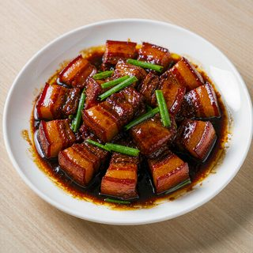
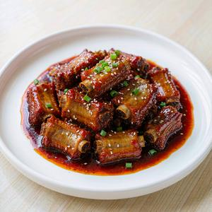
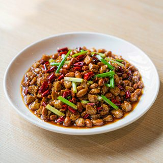
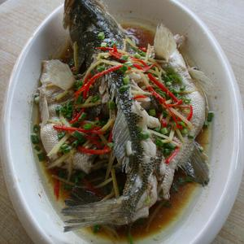
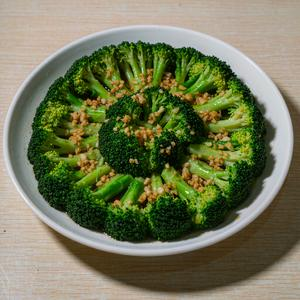
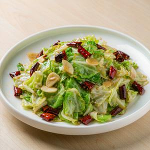
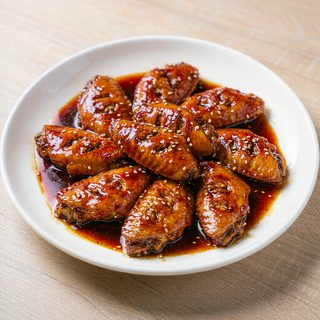
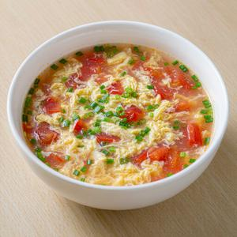
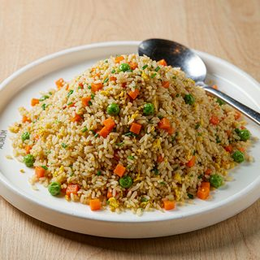
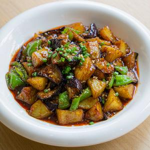

7 个页面并排。真实菜名 + 项目里那 80 张菜图；尺寸按「rpx ÷ 2」写，落到 WXSS 直接 ×2。确认方向后我改 WXSS，尽量不动 WXML 和 JS。
background: var(--c-surface) —— 头部、列表、表单、弹层，全是白盒子。这就是「卡片堆叠」的实体。border-radius: var(--r-pill) —— 按钮、标签、头像一律药丸。全站同一个圆角＝没有层级。
#FF7043 对纸底只有 2.45:1，当正文用不达标 —— 所以新增 灶红 #B23A18（5.3:1）专管「字」，
橙继续管「面」（选中的横线、点线、主按钮底、印章边）。
主按钮顺便把字色从白改成墨：白压橙 2.74:1 也不达标，墨压橙 5.98:1。
| 档 | 原来 | 现在 |
|---|---|---|
| 弹层顶部 | 28rpx | 28rpx（只给底部弹层） |
| 小方图 | 16rpx | 10rpx（只给照片缩略图） |
| 主按钮 / 输入框 | 999rpx 药丸 | 6rpx 直角（一屏最多一个实心块） |
| 标签 / 分类 / 头像 / 步进器 | 999rpx 药丸 | 2–6rpx 直角或描边（不再是药丸） |
| 二选一模式开关 | 999rpx | 999rpx（胶囊只留这一处，它是真正的「切换」） |
这个题目最容易产出的是：白卡网格 + 胶囊 chips + 一堆药丸按钮 + 主色到处填 + 「大数字＋支撑统计」的 hero。 这些我一个没留。同时避开了另一个极端（报纸式的「零圆角 + 满屏发丝线」）： 这里食物照片仍然是主视觉，菜名用宋体走「印在纸上」的味道，圆角也没归零。
★ 字体说明：小程序做不到自定义字体。菜名/标题上的是系统衬线栈，iOS 上是真宋体， Android 多数机型回退系统黑体 —— 版面不塌，只是少点味道。所以它当加分项，不当承重结构。

藏


藏




